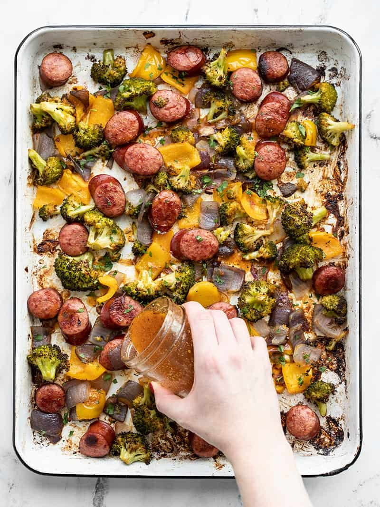

Roasted Sausage and Broccoli

Description
This sheet-pan recipe tastes great with whatever vegetables you have on hand. Perfect for weeknight dinners!
Ingredients
Vinaigrette
- 1/4 cup olive oil
- 2 tbsp red wine vinegar
- 1 tsp coarse deli or Dijon mustard
- 1/2 tsp garlic powder
- 1/4 tsp dried oregano
- 1/2 tsp smoked paprika
- 1/2 tsp salt
- freshly ground black pepper
- 1/4 tsp sugar
Sausage and Vegetables
- 12 oz smoked sausage
- 1 lb broccoli
- 1 red onion
- 1 bell pepper
For Serving
- 2 cups uncooked rice
- Sesame seeds (to taste)
Steps
- Preheat the oven to 400F. Line a baking sheet with parchment paper.
- Combine the ingredients for the vinaigrette in a mason jar. Shake until combined and set aside.
- Slice the smoked sausage into 1/2 inch medallions. Cut the broccoli into florets. Dice the bell pepper and onion. Place sausage and sliced veggies on the baking sheet.
- Drizzle 2 tbsp of vinaigrette over sausage and veggies and toss to coat.
- Roast veggies in oven for 20 minutes, stir, and roast for 20 more minutes (40 minutes total).
- While the sausage and veggies are cooking, make the rice in your rice cooker.
- Remove the sausage and veggies from the oven and drizzle with half the remaining vinaigrette.
- Divide sausage, veggies and rice equally among 4 bowls. Drizzle evenly with the remaining vinaigrette and add sesame seeds to taste. Serve immediately or put in the fridge.